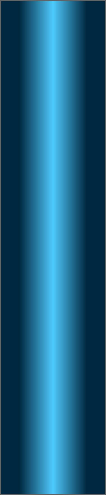
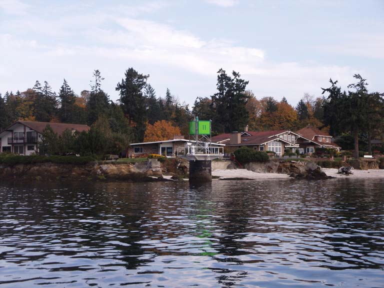
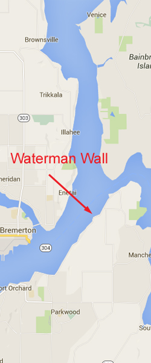

Waterman Wall
Topography: Sheer and craggy rock wall that starts at depths of 50-70 feet and drops down to over 140 feet.
Puget Sound marine life rating: 4
Puget Sound structure rating: 4
Diving depths: 80-120 feet.
Highlight: Tall wall covered in dense and diverse invertebrate life not typically found in Puget Sound. Chance encounters with wolf eels and giant pacific octopus.
Skill level: Advanced
GPS coordinates: N47° 35.110’ W122° 34.240’
Access by boat: Waterman Wall is located immediately west of Waterman Point and north of Port Orchard. The top side scenery is highlighted by some exclusive homes, a beautiful white shell beach, and a prominent green navigation marker.
I easily find this wall with a depth sounder by running a straight line between the south side of the navigation marker and a little isolated house (currently painted red) due west on the far shore across the channel. The depth sounder reveals a sudden increase in depth as the bottom quickly drops from 50 to well over 100 feet deep. I anchor my boat on the shelf above the wall in about 30-40 feet of water.
Shore Access: None
Dive profile: After descending the anchor line and checking the bite of the anchor, I head due west and watch the slope of the substrate intensify before finally going vertical. It is then a simple matter of picking direction and depth. I have done dives to 120 feet where I work vertically, not traveling more the 10 yards either direction from where I entered the wall. On other dives I run down a stretch of the wall at one depth, then back at another. The sheer part of this wall is only about 50 yards wide and ease to transverse multiple times on a single dive.
The wall consists of hard rock and is very rugged. It is covered with ledges, crevices, crags, boulders, small caves and all sorts of great places for marine life to establish residence. I take my time and poke around the countless nooks and crannies. Either side of this wall is bordered by a steeply sloping substrate strewn with rocks.
I ascend to the shelf and follow it east to the shallows once my no-deco time runs low. Sections of the shelf consist of jagged rock formations that form miniature blades. Following the shelf east to the navigation marker puts me at safety stop depths amidst large growths of broadleaf kelp situated on a white broken shell substrate.
Visibility at this site tends to be somewhat less than other places within central Puget Sound, especially in the shallows. I expect between 10 and 20 feet of visibility when diving this wall.
My preferred gas mix: EAN 31
Current observations:
Current Station: Rich Passage, off Pleasant Beach
Noted Slack Corrections: None
This is a current intensive site. I only dive this site at slack on minor exchanges when the maximum flooding currents is less than 0.6 knots. I try to enter the water no earlier than 20 minutes before slack before ebb. Even entering the water an hour before slack before ebb on a minor exchange can result in encountering some strong current. I have also noted substantial waterfall current at this site off-slack on minor floods. I also have noted a persistent surface current that often flows a different direction than current on the wall. I do not leave the anchor line unless I am comfortable with current intensity and direction.
Boat Launch:
Don Armini ramp (West Seattle). Approximately 10 miles to the dive site.
Facilities: None
Hazards:
Current: Strong current, particularly off-slack or possibly at slack on moderate to heavy exchanges. Current does waterfall over this wall.
Depth: This wall continues past established safe recreational scuba limits. Good buoyancy and depth management skills are a must.
Boat traffic: Heavy boat traffic is common through this narrow passage on nice days. Several Bremerton and Port Orchard marinas are in close proximity. You can feel the vibration from the Bremerton/Seattle ferry with your entire body as it passes Waterman Point.
Marine life: Hard rock formations combine with robust current to provide an excellent habitat for a variety of invertebrate species that are relatively uncommon throughout many areas of central and southern Puget Sound. Most noticeable are the dense and colorful colonies of sponges, including yellow and purple encrusting sponges. Huge clusters of giant barnacles cling to the current swept rocks, many of which are abandoned and make excellent condos for small creatures such as decorated warbonnets and grunt sculpins. White glove leather and a number of nudibranch make this wall home, including Hudson and Nanaimo dorids, orange spotted nudibranchs, and sea lemons. A careful eye may spot butterfly crabs, sailfin sculpins, northern spearnose poachers, and longfin sculpins loitering between rocks.
Rockfish in this area are limited to quillback, copper, Puget Sound, and brown. Joining the rockfish are small lingcod, kelp greenling, colorful red Irish lords, and bull-headed buffalo sculpins.
I have noted a number of giant Pacific octopus and the occasional wolfeel hiding along this wall. Although I am certain dozens of each species call this wall home, there are so many secluded dens that spotting them is a daunting task.
The kelp beds in the shallows provide sanctuary for a number of kelp, graceful, and red rock crabs. White and yellow Hudson dorids are found at times of the year in abundance on rocks and kelp while small schools of pile and striped seaperch patrol nearby.
Puget Sound marine life rating: 4
Puget Sound structure rating: 4
Diving depths: 80-120 feet.
Highlight: Tall wall covered in dense and diverse invertebrate life not typically found in Puget Sound. Chance encounters with wolf eels and giant pacific octopus.
Skill level: Advanced
GPS coordinates: N47° 35.110’ W122° 34.240’
Access by boat: Waterman Wall is located immediately west of Waterman Point and north of Port Orchard. The top side scenery is highlighted by some exclusive homes, a beautiful white shell beach, and a prominent green navigation marker.
I easily find this wall with a depth sounder by running a straight line between the south side of the navigation marker and a little isolated house (currently painted red) due west on the far shore across the channel. The depth sounder reveals a sudden increase in depth as the bottom quickly drops from 50 to well over 100 feet deep. I anchor my boat on the shelf above the wall in about 30-40 feet of water.
Shore Access: None
Dive profile: After descending the anchor line and checking the bite of the anchor, I head due west and watch the slope of the substrate intensify before finally going vertical. It is then a simple matter of picking direction and depth. I have done dives to 120 feet where I work vertically, not traveling more the 10 yards either direction from where I entered the wall. On other dives I run down a stretch of the wall at one depth, then back at another. The sheer part of this wall is only about 50 yards wide and ease to transverse multiple times on a single dive.
The wall consists of hard rock and is very rugged. It is covered with ledges, crevices, crags, boulders, small caves and all sorts of great places for marine life to establish residence. I take my time and poke around the countless nooks and crannies. Either side of this wall is bordered by a steeply sloping substrate strewn with rocks.
I ascend to the shelf and follow it east to the shallows once my no-deco time runs low. Sections of the shelf consist of jagged rock formations that form miniature blades. Following the shelf east to the navigation marker puts me at safety stop depths amidst large growths of broadleaf kelp situated on a white broken shell substrate.
Visibility at this site tends to be somewhat less than other places within central Puget Sound, especially in the shallows. I expect between 10 and 20 feet of visibility when diving this wall.
My preferred gas mix: EAN 31
Current observations:
Current Station: Rich Passage, off Pleasant Beach
Noted Slack Corrections: None
This is a current intensive site. I only dive this site at slack on minor exchanges when the maximum flooding currents is less than 0.6 knots. I try to enter the water no earlier than 20 minutes before slack before ebb. Even entering the water an hour before slack before ebb on a minor exchange can result in encountering some strong current. I have also noted substantial waterfall current at this site off-slack on minor floods. I also have noted a persistent surface current that often flows a different direction than current on the wall. I do not leave the anchor line unless I am comfortable with current intensity and direction.
Boat Launch:
Don Armini ramp (West Seattle). Approximately 10 miles to the dive site.
Facilities: None
Hazards:
Current: Strong current, particularly off-slack or possibly at slack on moderate to heavy exchanges. Current does waterfall over this wall.
Depth: This wall continues past established safe recreational scuba limits. Good buoyancy and depth management skills are a must.
Boat traffic: Heavy boat traffic is common through this narrow passage on nice days. Several Bremerton and Port Orchard marinas are in close proximity. You can feel the vibration from the Bremerton/Seattle ferry with your entire body as it passes Waterman Point.
Marine life: Hard rock formations combine with robust current to provide an excellent habitat for a variety of invertebrate species that are relatively uncommon throughout many areas of central and southern Puget Sound. Most noticeable are the dense and colorful colonies of sponges, including yellow and purple encrusting sponges. Huge clusters of giant barnacles cling to the current swept rocks, many of which are abandoned and make excellent condos for small creatures such as decorated warbonnets and grunt sculpins. White glove leather and a number of nudibranch make this wall home, including Hudson and Nanaimo dorids, orange spotted nudibranchs, and sea lemons. A careful eye may spot butterfly crabs, sailfin sculpins, northern spearnose poachers, and longfin sculpins loitering between rocks.
Rockfish in this area are limited to quillback, copper, Puget Sound, and brown. Joining the rockfish are small lingcod, kelp greenling, colorful red Irish lords, and bull-headed buffalo sculpins.
I have noted a number of giant Pacific octopus and the occasional wolfeel hiding along this wall. Although I am certain dozens of each species call this wall home, there are so many secluded dens that spotting them is a daunting task.
The kelp beds in the shallows provide sanctuary for a number of kelp, graceful, and red rock crabs. White and yellow Hudson dorids are found at times of the year in abundance on rocks and kelp while small schools of pile and striped seaperch patrol nearby.



Hudson's Dorid
Decorated Warbonnet
Red Irish Lord
Lingcod
Underwater imagery from this site

Hudson's Dorid
Grunt Sculpin